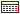

Jobs Statistic
Executed Number
Wall Time Used
RAM Used
CPU Used
RB Used
Exit Status
Status
Jobs History
Running/Waiting
Wall Time
Choose your preferred Site/VO:
Site
INFN-CNAF
VO
Alice
Starting from a selected date:

Charts are available for:
Last 5 days
Last 15 days
Last Month